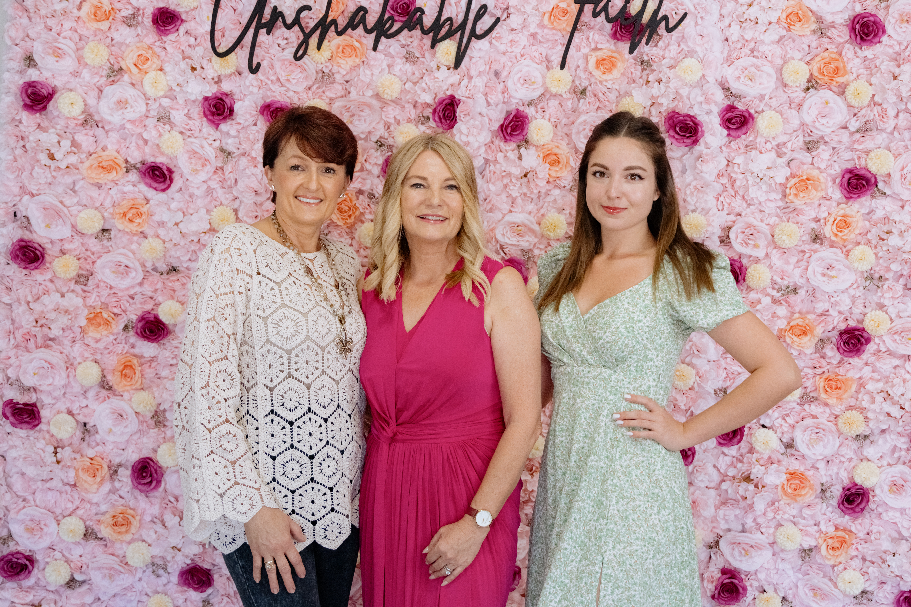
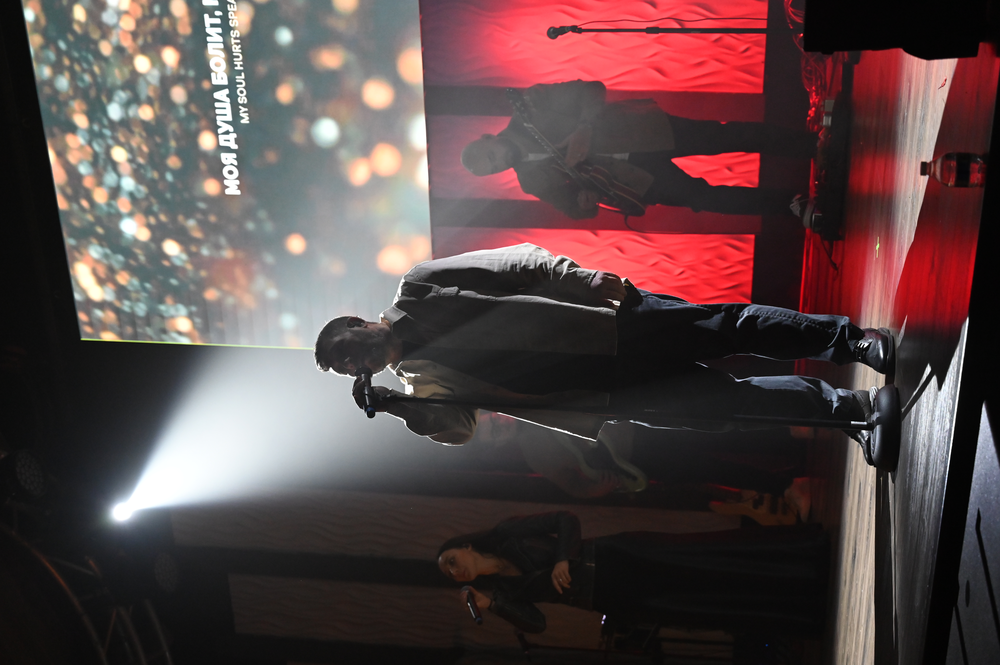

Возраст 0–12
KidsZone
Радостная воскресная школа, где дети открывают любовь Бога через истории, поклонение и творчество.
Подробнее →
Обретите веру, дружбу и своё место на английском и русском.
Приходите в это воскресенье и почувствуйте церковь, где вам действительно рады.
Мы - церковь, ведомая Духом и основанная на Библии, в сердце Лос-Анджелеса. У нас много русскоязычных семей, и мы строим одну семью через культуры и поколения.
Если вы возвращаетесь к вере или только начинаете искать - вам здесь место.
Наша история →
Вас ждут искреннее поклонение, понятная проповедь по Библии и тёплая встреча с людьми. Служения проходят на английском и русском, и здесь есть место для всей семьи. Приходите как есть - мы поможем вам с первого шага.
10:00 · Главный зал
12:00 · Главный зал
19:00 · Зал общения · English & Русский
5853 Laurel Canyon Blvd, North Hollywood, CA 91607
Для детей, подростков, молодёжи и взрослых у нас есть живое сообщество для роста. Наши служения помогают находить друзей, призвание и вместе следовать за Иисусом. Воскресенье - это только начало.
Радостная воскресная школа, где дети открывают любовь Бога через истории, поклонение и творчество.
Подробнее →Пространство для подростков и молодёжи, где можно задавать настоящие вопросы и открывать свою идентичность во Христе.
Подробнее →Небольшие еженедельные встречи по всему городу, где рождается настоящая дружба и вера становится глубже.
Подробнее →Реальные люди. Реальный путь веры. Реальное сообщество в Лос-Анджелесе.
«Я переехала в LA и чувствовала себя совершенно одна. В первое же воскресенье меня пригласили на кофе. Три года спустя — это мои лучшие друзья.»
— Марина К., приехала с Украины
«Я скептически относился к церкви. Но послание было настоящим, люди искренними, и меня ни разу не осудили. Прихожу каждое воскресенье с тех пор.»
— Джеймс Т., Лос-Анджелес
«Наши дети в восторге от воскресной школы, а мы наконец нашли общину, где чувствуем себя как дома — сразу в двух культурах.»
— Семья Соколовых, LA